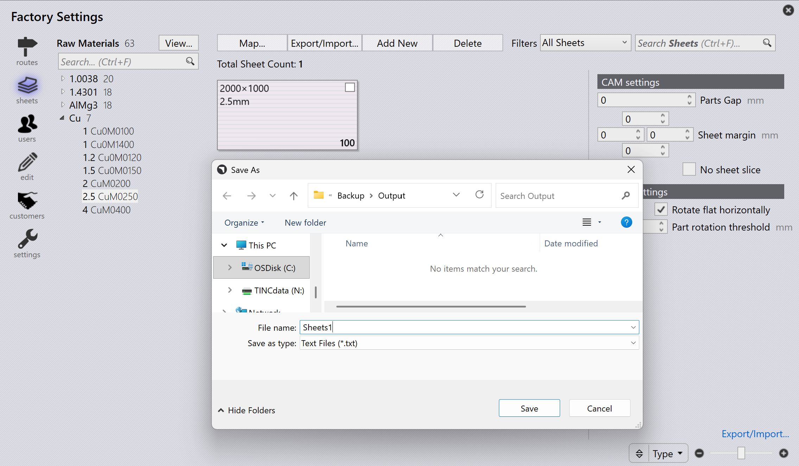

匯出/匯入材料
使用文字格式
若要匯出庫存材料，請導覽至 Factory → Sheets，點擊 Export/Import， 選取 Export sheets，選擇 .txt，並將其儲存至目標資料夾。

開啟匯出的 .csv 檔案，新增具備必要詳情的原材料和板材，然後儲存檔案。
若要匯入更新的檔案，請導覽至 Factory → Sheets → Export/Import，選取 Import，選擇修改後的 TXT 檔案，新增的材料和板材就會出現在 TruSmartCAM 中。


使用 CSV 格式
-
點擊 Factory → Sheets → Export/Import… → Export sheets。選擇 CSV 檔案並儲存至目標資料夾。
-
新增板材和板材參數，儲存 .csv 檔案。
-
使用 Import sheets，選擇修改後的 .csv 檔案。
-
新增的材料和板材就會出現在 TruSmartCAM 中。
材料匯入需要是特別建構的文字基礎檔案，涵蓋以下格式。
Material-Name=[BendMaterial],[Density],[FName];
RawMaterial-Thickness,[Name]=[Film],[Treatment],[Surface];
Sheet-Width,Height,Grain,Desc,HeatNumber=Qty,[Factory],[Shelf],[Cost],[Comments]範例： Aluminum0.5,Aluminum-051500,1500,None,=112,,,22,2500,1250,Horizontal,=105,,,7,2500,1500,None,=100
| 若要輕鬆建立匯入檔案，請先匯出材料，然後對其進行修改或檢視其結構。 |